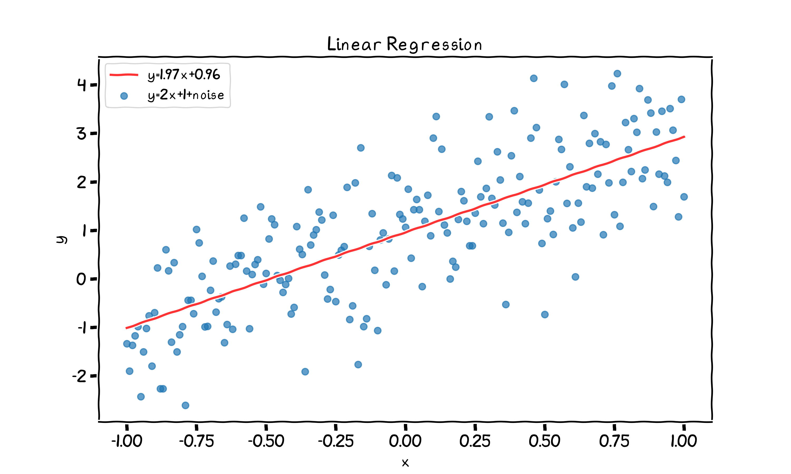
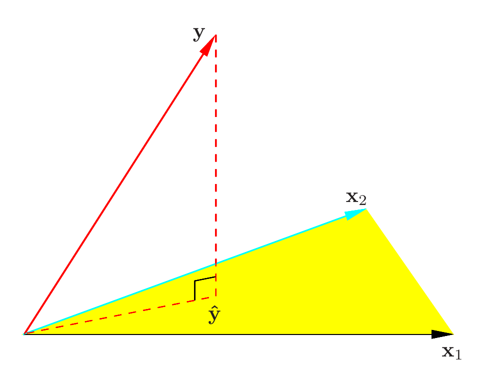
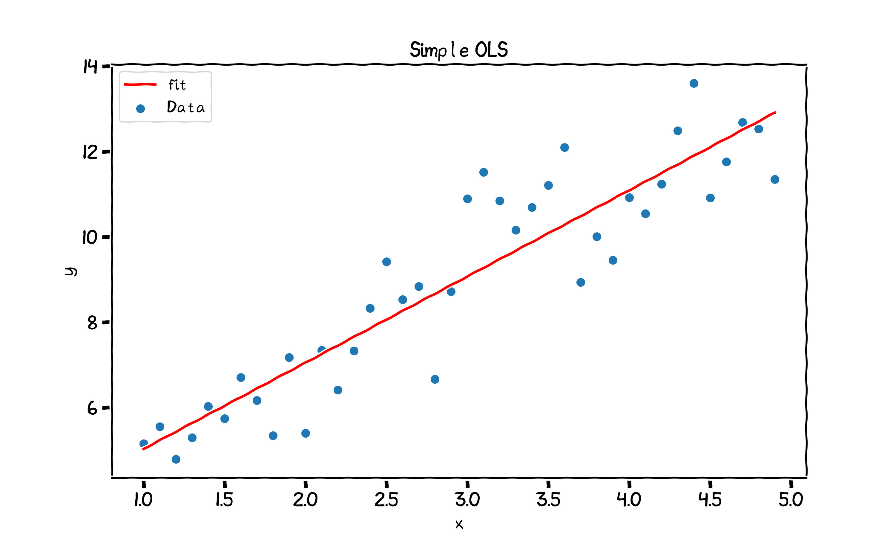
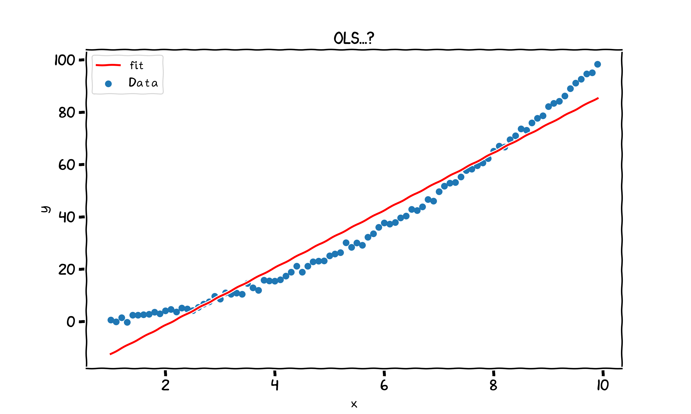

layout: true <div class="my-header"> <p class="align_left"><img src="images/yonsei_logo.png" style="height: 30px;"/></p> <p class="align_right"><b>Linear Regression</b></p> </div> <div class="my-footer"> <p class="align_right"><b>2021.04.23 ML Study</b></p> <p class="align_left"><b>Tae Geun Kim</b></p> </div> --- class: center, middle # Linear Regression <h4 style="color:brown">Part I: Statistical Analysis</h4> <h3 style="color: darkblue">Tae Geun Kim</h3> --- ## Table of Contents -- * What is the Linear regression? -- * Estimate procedure -- * OLS -- * MLE -- * Bayesian Inference -- * Test procedure -- * z-test & t-test -- * F-test --- class: center, middle # What is the Linear regression? --- class: split-70 ### Is this plot linear regression? .left-column[ <div id="boxshadow" style="width:90%">  <figcaption style="text-align: center;"><b>Fig.1</b> Linear Regression...?</figcaption> </div> ] -- .right-column[ **Trivially linear regression!** ] --- class: split-30 ### Is this plot linear regression? .right-column[ <div id="boxshadow" style="width:100%"> <img src="images/xkcd_lam_10_5_plot.png" alt="gaussian" style="width:100%"/> <figcaption style="text-align: center;"><b>Fig.2</b> Non-Linear Regression...?</figcaption> </div> ] -- .left-column[ It seems not linear... ] -- .left-column[ But it is still linear regression! ] --- ### Definition of *Linear regression* * The linear regression model has the form : $$f(X) = \beta\_0 + \sum\_{j=1}^p X\_j \beta\_j$$ -- * `\(\small X_j\)` can come from different sources : -- * `\(\small X_j \in \mathbb{R}\)` : Simple linear regression (Fig.1) -- * `\(\small X_j = \phi_j(X)\)` : Basis expansion linear regression (For Fig.2, `\( ~\small \phi_j(X) = \exp[\frac{-(X - \mu_j)^2}{s}]\)`) -- * But still linear for all components of `\(\small \beta\)`. (`\( \small f(X) = \beta_0 + \beta_1X + \beta_2X^2\)` is also linear regression) --- class: center, middle # Estimate Procedure --- ### Estimate Procedure There are three ways to estimate parameter `\(\beta\)` : -- 1. Ordinary Least Square (OLS) -- $$\hat{\beta} = \underset{\beta}{\text{argmin}} \,\text{RSS}(\beta)$$ -- 2. Maximum Likelihood Estimation (MLE) -- $$\hat{\beta} = \underset{\beta}{\text{argmax}} \,P(Y|X,\beta)$$ -- 3. Bayesian Inference -- <br/> *ESL* uses OLS as estimator. If you want to see MLE & Bayesian inference, see *PRML* by *C. Bishop*. --- ### Why do we use OLS? * Unlike MLE, no stochastic assumptions in OLS. (In MLE, `\(\small \epsilon \sim \mathcal{N}(0, \sigma^2)\)`) -- * Efficiency is guaranteed via *Gauss-Markov Theorem*. -- .center[ <div class="animated-border-quote"> <blockquote> <p> Under the <i>Gauss-Markov assumptions</i>, the OLS estimator \(\small \hat{\beta}\) is the <i>best linear unbiased estimator</i> of \(\small \beta\). </p> </blockquote> </div> ] -- * **Linearity** * **Exogeneity** : `\(\mathbb{E} (\varepsilon) = 0\)` * **Homoscedasticity** : `\(\text{Var}(\mathbf{y}) = \sigma^2 I\)` * **Non-autocorrelation** : `\(\text{Cov}(\varepsilon_i,\varepsilon_j) = 0 \quad (i\neq j)\)` --- ### OLS Estimation * Residual Sum of Square (RSS) $$\begin{align} \text{RSS}(\beta) &= \sum\_{i=1}^N(y\_i - \beta\_0 - \sum\_{j=1}^p x\_{ij}\beta\_j)^2 \\\\ &= (\mathbf{y} - \mathbf{X}\beta)^T (\mathbf{y} - \mathbf{X}\beta) \end{align}$$ -- * `\(\mathbf{y} \in \mathbb{R}^{N},\quad \mathbf{X} \in \mathbb{R}^{N \times (p+1)}, \quad \beta \in \mathbb{R}^{p+1}\)` -- $$\mathbf{y} = \begin{pmatrix} y\_1 \\\\ \vdots \\\\ y\_N \end{pmatrix}, \quad X = \begin{pmatrix} 𝟙 | (x\_{ij}) \end{pmatrix}, \quad \beta = \begin{pmatrix} \beta\_0 \\\\\ \vdots \\\\\ \beta\_{p+1}\end{pmatrix}$$ -- * To estimate `\(\hat{\beta}\)`, we should need following properties. $$\frac{\partial \text{RSS}}{\partial \beta} = 0,\quad \left|\frac{\partial^2 \text{RSS}}{\partial \beta \partial \beta^T}\right| >0$$ --- ### OLS Estimation * We obtain derivatives as follows : $$\begin{align} \frac{\partial \text{RSS}}{\partial \beta} &= -2\mathbf{X}^T(\mathbf{y} - \mathbf{X}\beta)\\\\ \frac{\partial^2 \text{RSS}}{\partial \beta \partial \beta^T} &= 2\mathbf{X}^T \mathbf{X} \end{align}$$ -- * But `\(\mathbf{X}^T\mathbf{X}\)` is positive **semi**-definite, we can't guarantee `\(\left| X^TX \right| > 0\)` -- * Thus, we assume `\(\mathbf{X}\)` has full column rank. -- <div class="animated-border-quote"> <blockquote> <p> Suppose all columns of \(\mathbf{X}\) are linearly independent. <br/> If we take non-zero vector \(\small v\), then \(\mathbf{X}v\) is a linear combination of columns of \(\mathbf{X}\), thus it can't be zero. Therefore, \(v^T \mathbf{X}^T \mathbf{X} v = (\mathbf{X}v)^T (\mathbf{X}v) > 0\) </p> </blockquote> </div> --- ### OLS Estimation Since `\(\text{RSS}(\beta)\)` is differentiable & its second derivative is positive definite, `\(\text{RSS}(\beta)\)` has minimum where its first derivative becomes zero. -- $$\mathbf{X}^T(\mathbf{y} - \mathbf{X} \beta) = 0$$ -- The equation is called **Normal equation** and it has the unique solution: -- $$\hat{\beta} = (\mathbf{X}^T \mathbf{X})^{-1} \mathbf{X}^T \mathbf{y}$$ -- And our prediction is : -- $$\hat{\mathbf{y}} = \mathbf{X}\hat{\beta} = \mathbf{X}(\mathbf{X}^T\mathbf{X})^{-1} \mathbf{X}^T \mathbf{y} \equiv \mathbf{H} \mathbf{y}$$ -- The matrix `\(\mathbf{H}\)` is called a **Hat matrix** or **Projection matrix**. --- ### Geometrical Description of OLS Let's start from Normal equation. -- $$\mathbf{X}^T(\mathbf{y} - \hat{\mathbf{y}}) = 0$$ -- It means the vector `\(\small \mathbf{y} - \hat{\mathbf{y}}\)` is orthogonal to column space of `\(\small \mathbf{X}\)`. And also `\(\small \hat{\mathbf{y}} = \mathbf{X}\beta \in \text{Col}(\mathbf{X})\)`. Then we can represent normal equation graphically: -- <center> <div id="boxshadow" style="width:50%">  </div> </center> --- ### Implementation of OLS It's simple to implement OLS. ```python import numpy as np def find_beta_hat(X,y): # X should be np.matrix return np.linalg.inv(X.T * X) * X.T * y ``` But it often return error message as follows: ```error Traceback (most recent call last): File "<stdin>", line 1, in <module> File "<__array_function__ internals>", line 5, in inv File "/usr/lib/python3.9/site-packages/numpy/linalg/linalg.py", line 545, in inv ainv = _umath_linalg.inv(a, signature=signature, extobj=extobj) File "/usr/lib/python3.9/site-packages/numpy/linalg/linalg.py", line 88, in _raise_linalgerror_singular raise LinAlgError("Singular matrix") numpy.linalg.LinAlgError: Singular matrix ``` --- ### Implementation of OLS It is because our assumption is too strong : `\(\mathbf{X}\)` can have *rank deficiency* - not full rank. -- Then how to obtain `\(\small \hat{\beta}\)` if `\(\small \mathbf{X}^T \mathbf{X}\)` is singular? -- Use **SVD**. -- $$\mathbf{X} = U\Sigma V^T$$ * `\(\small \mathbf{U},\,\mathbf{V} \in O(N),~\Sigma = \text{diag}(\sigma_1,\cdots,\sigma_N)\)` -- * If `\(\small \mathbf{X}\)` has the rank `\(\small r < N\)`, then we can partition matrices as follows. -- $$\begin{pmatrix}U\_{N\times r} | U\_{N\times (N-r)}\end{pmatrix} \begin{pmatrix} \Sigma\_{r\times r} & \mathbf{0} \\\\ \mathbf{0} & \mathbf{0} \end{pmatrix} \begin{pmatrix} V\_{N\times r}^T \\\\ V\_{N \times (N-r)}^T \end{pmatrix} = U\_{N \times r} \Sigma\_{r\times r} V_{N\times r}^T $$ -- * Then we can calculate the matrix although `\(\small \mathbf{X}^T\mathbf{X}\)` is singular : -- $$X^\dagger \equiv (X^TX)^{-1} X^T = V\_{N \times r} (\Sigma\_{r\times r})^{-1} U\_{N \times r}^T$$ -- This matrix is called **Moore-Penrose pseudo inverse**. --- ### Implementation of OLS Fortunately, numpy already implemented pseudo inverse. ```python import numpy as np def find_beta_hat(X, y): # X should be np.matrix return np.linalg.pinv(X) * y ``` -- Then we can also obtain `\(\small \hat{\mathbf{y}}\)`. -- ```python def find_y_hat(X, y): beta_hat = find_beta_hat(X, y) return X * beta_hat ``` -- Then let's see a simple example. --- ### Example : Simple Linear Regression 1. Let's generate data with error : `\(\small Y = 2X + 3 + \varepsilon\)` -- ```python import numpy as np # Generate data with normal error. x = np.arange(1, 5, 0.1) err = np.random.randn(len(x)) y = 2 * x + 3 + err ``` -- 2. Construct `\(\small \mathbf{X},~\mathbf{y}\)` -- ```python import statsmodels.api as sm X = np.matrix(x).T # To Column matrix X = sm.add_constant(X) # Add constant -> (1 | X) y = np.matrix(y).T # To Column matrix ``` -- 3. Find `\(\small \hat{\mathbf{y}}\)` -- ```python y_hat = find_y_hat(X, y) ``` --- ### Example : Simple Linear Regression Finally, plot both our data and fit : -- <center> <div id="boxshadow" style="width:80%">  </div> </center> -- You can see the full code here : [Axect's Github](https://github.com/Axect/ESL_Study/blob/master/chap3/python/mle.py) --- class: center, middle # Test Procedure --- ### That's it...? * We implement OLS. So, we can obtain `\(\small \hat{\beta}\)` and `\(\small \hat{\mathbf{y}}\)`. Then that's it...? -- <center> <div id="boxshadow" style="width:80%">  </div> </center> --- ### Hypothesis Test We need statistical test to check validity of our linear model. In statistics, this test is called **Hypothesis testing**. -- 1. First, state the *null-hypothesis* (`\(\small H_0\)`) and *alternative-hypothesis* (`\(\small H_1\)`). -- (For example, `\(\small H_0 : \beta_i = 0,~~H_1 : \beta_i \neq 0\)`) -- 2. Do proper statistical test and obtain statistics. -- (For example, let's do z-test for `\(\small \hat{\beta}\)` and obtain z-score & p-value) -- 3. Determine if we can reject null hypothesis. -- (For example, if p-value < 0.05, then we usually reject null hypothesis) -- To do this test, we need statistics of `\(\small \hat{\beta}\)`. --- ### Statistics of `\(\hat{\beta}\)` From *Gauss-Markov assumption*, we can get some statistics of `\(\small \mathbf{y} = \mathbf{X}\beta + \varepsilon\)` $$\begin{align} \mathbb{E}(\mathbf{y}) &= \mathbb{E}(\hat{\mathbf{y}}) \\\\ \text{Var}(\mathbf{y}) &= \sigma^2 I \end{align}$$ -- Then we can find **Expectation value** and **Variance-Covariance matrix** of `\(\small \hat{\beta}\)` -- $$\begin{align} \mathbb{E}(\hat{\beta}) &= \beta \\\\ \text{Var}(\hat{\beta}) &= \mathbb{E}(\hat{\beta} \hat{\beta}^T) - \mathbb{E}(\hat{\beta})\mathbb{E}(\hat{\beta}^T)\\\\ &= \mathbb{E}(\mathbf{X}^\dagger \mathbf{y}\mathbf{y}^T {\mathbf{X}^\dagger}^T) - \mathbf{X}^\dagger \mathbb{E}(\mathbf{y})\mathbb{E}(\mathbf{y})^T {\mathbf{X}^\dagger}^T \\\\ &= \mathbf{X}^\dagger \text{Var}(\mathbf{y}) {\mathbf{X}^\dagger}^T \\\\ &= \sigma^2 \mathbf{X}^\dagger {\mathbf{X}^\dagger}^T \\\\ &= (\mathbf{X}^T\mathbf{X})^{-1} \sigma^2 \end{align}$$ -- But we don't know `\(\small \sigma^2\)` -- `\(\rightarrow\)` we should obtain sample variance. --- ### Statistics of `\(\hat{\beta}\)` Typically, one estimates the variance `\(\small \sigma^2\)` by -- $$\hat{\sigma}^2 = \frac{1}{N-p-1} \sum\_{i=1}^N (y\_i - \hat{y}\_i)^2$$ -- Because it preserves **Unbiased-ness**. $$\mathbb{E}(\hat{\sigma}^2) = \sigma$$ -- Let's check this. --- ### Statistics of `\(\hat{\beta}\)` $$ \small \begin{align} \hat{\sigma}^2 &= \frac{1}{N-p-1} \sum\_{i=1}^N (y\_i - \hat{y}\_i)^2 \\\\ &= \frac{1}{N-p-1} (\mathbf{y} - \mathbf{Hy})^T(\mathbf{y} - \mathbf{Hy}) \\\\ &= \frac{1}{N-p-1} \mathbf{y}^T (\mathbf{H}^T\mathbf{H} - \mathbf{H}^T - \mathbf{H} + I) \mathbf{y} = \frac{1}{N-p-1} \mathbf{y}^T(I-\mathbf{H})\mathbf{y} \end{align}$$ -- Let denote `\(\small I - \mathbf{H}\)` by `\(\small \mathbf{A}\)`. Then let's obtain expectation of `\(\hat{\sigma}^2\)` -- $$\small \mathbb{E}(\mathbf{y}^T\mathbf{Ay}) = \sum\_{i,j} A\_{ij}(\sigma^2 \delta\_{ij} + \mu\_i \mu_j)=\sigma^2 \text{tr}(\mathbf{A}) + \mu^T \mathbf{A}\mu = \sigma^2 \text{tr}(\mathbf{A})$$ -- $$\small \begin{align} \text{tr}(\mathbf{H}) &= \text{tr}(\mathbf{X}(\mathbf{X}^T\mathbf{X})^{-1}\mathbf{X}^T) = \text{tr}(I\_{(p+1)\times(p+1)}) = p+1 \\\\ \text{tr}(\mathbf{A}) &= \text{tr}(I\_{N\times N} - \mathbf{H}) = N - p - 1 \end{align}$$ -- $$\therefore \mathbb{E} (\hat{\sigma}^2) = \sigma^2$$ --- ### Statistics of `\(\hat{\beta}\)` For convenience, we assume `\(\small \varepsilon \sim \mathcal{N}(0,\sigma^2)\)` then we can get distributions of `\(\small \hat{\beta},~\hat{\sigma}^2\)` -- $$\small \begin{align} \hat{\beta} &\sim \mathcal{N}(\beta,~(\mathbf{X}^T\mathbf{X})^{-1} \sigma^2) \\\\ \hat{\sigma^2} &\sim \frac{\sigma^2 \chi^2\_{N-p-1}}{N-p-1} \end{align}$$ <div class="animated-border-quote"> <blockquote> <p>\(\small\mathbf{y}^T(I-\mathbf{H})\mathbf{y}\) is symmetric & idempotent. Then eigenvalues of this matrix can be only 0 or 1. Thus, the rank of \(\small I-\mathbf{H}\) is \(\small\text{tr}(I-H) = N-p-1\). And it is the degree of freedom of \(\chi^2\)</p> </blockquote> </div> -- And let `\(\small z_j = \frac{\hat{\beta}_j - \beta_j}{\hat{\sigma}\sqrt{v_j}}\)` where `\(\small v_j = (\mathbf{X}^T\mathbf{X})^{-1}_{j,j}\)` then it's easy to find $$z\_i \sim t\_{N-p-1}$$ --- ### t-test of `\(\hat{\beta}_i\)` Now, put null hypothesis as `\(\small H_0: ~\beta_i = 0\)`. Then we can do **t-test** to `\(\small z_i\)`. -- If we accept `\(\small H_0\)` then `\(\small z_i\)` becomes as follows: -- $$z\_i = \frac{\hat{\beta}\_j}{\hat{\sigma}\sqrt{v\_j}}$$ -- And we can obtain corresponding **p-value** (`\(\small P(|Z| \geq z_i\)`). -- If p-value is smaller than 0.05, then we usually reject `\(\small H_0\)`. -- For convenience, if `\(\small N\)` is large enough, then we can use **z-test** instead of t-test. --- ### F-test for two models To be filled... --- ### Example : Prostate cancer <iframe src="https://nbviewer.jupyter.org/github/Axect/ESL_Study/blob/master/chap3/python/prostate.ipynb" style="width:100%;height:500px"></iframe> --- ### References * T. Hastie et al., *The Elements of Statistical Learning 2nd ed*, Springer (2009) * Gujarati, D. N., and Porter, D. C., *Basic Econometrics 5th ed*, McGraw Hill (2009) * P. Das., *Econometrics in Theory and Practice*, Springer (2019) * C. M. Bishop., *Pattern Recognition and Machine Learning*, Springer (2006) --- class: center, middle # Thank you!